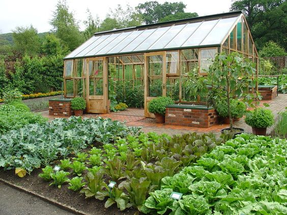
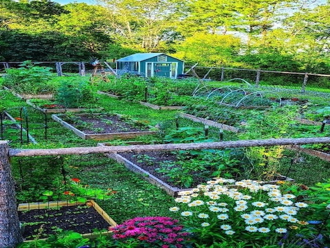
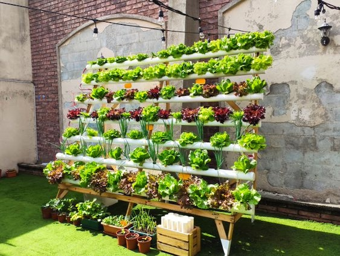
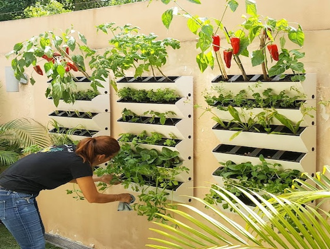

12 de enero 2024
Huerta con invernadero
Esta huerta combina métodos tradicionales con un invernadero
ingeniosamente construido a partir de materiales reciclados. Cultivos invernales cuidadosamente
seleccionados y prácticas agrícolas responsables aseguran alimentos nutritivos durante los meses fríos.
Comprometidos con la sostenibilidad, exploran opciones de energía renovable. Un modelo inspirador de
resiliencia y cuidado del medio ambiente.
Leer mas

12 de enero 2024
Huerta en Bancales
Las huertas en bancales elevados son la nueva apuesta para una producción
eficiente. Esta técnica mejora el drenaje, facilita el riego y ha demostrado aumentar la productividad
local. Un cambio práctico que está transformando la forma en que cultivamos alimentos.
Leer mas

12 de enero 2024
Huerta Hidropónica Casera
En un rincón de hogares locales, la tendencia de las huertas hidropónicas caseras está floreciendo. Esta
innovación agrícola sin suelo está demostrando ser un éxito, brindando a los entusiastas de la jardinería
una nueva forma de cultivar alimentos frescos en casa. Un paso hacia la sostenibilidad y autosuficiencia
alimentaria.
Leer mas

12 de enero 2024
Huertas Verticales Urbanas
En la jungla urbana, las huertas verticales son la respuesta innovadora para la escasez de espacio. Estas
estructuras en altura están transformando balcones y terrazas en oasis verdes, ofreciendo una solución
creativa para cultivar alimentos frescos en entornos urbanos limitados. Una revolución verde que acerca la
agricultura a la vida citadina.
Leer mas